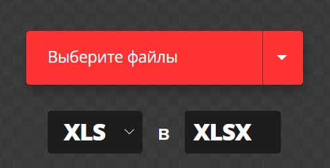

Некоторые другие программы используют другие форматы таблиц. В случае их некорректного отображения стоит преобразовать их в формат .xlsx. Табличный процессор предложит сделать это сам, если вы откроете файл формата .et или .xls, но вы можете сделать это сами (например, если нет возможности или нужды открывать программу), используя утилиту "Конвертация электронных таблиц", которая поставляется вместе с табличным процессором.

Выберите файл для конвертации и нажмите "Конвертировать". Программа предложит вам сохранить результирующий файл.